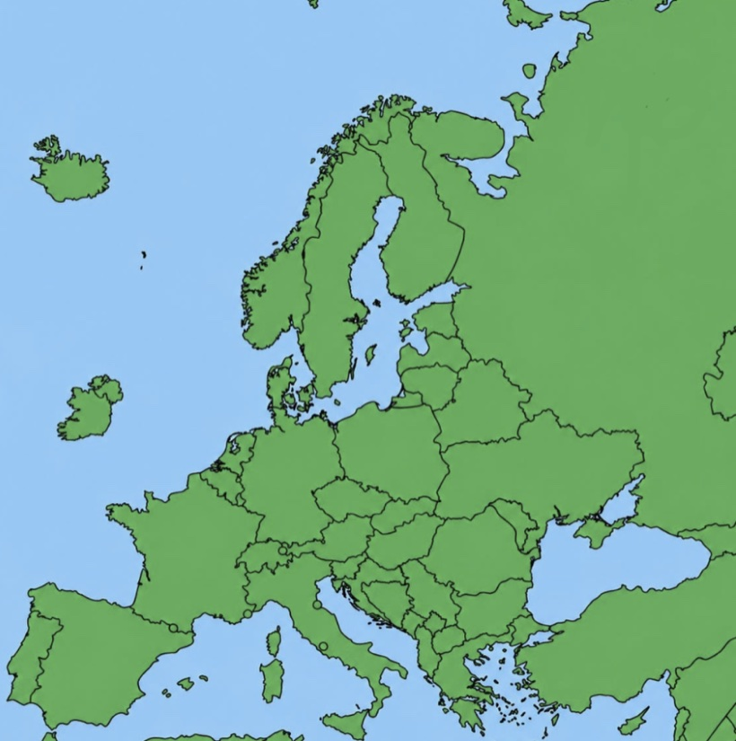

DalarwenWelsh valley enters fourth year with no mobile signal; residents say they are ‘fine’
The Bureau understands the total absence of coverage at Dalarwen is being maintained, though a spokesbody for the responsible holdings company was unavailable, having enrolled us automatically instead.
Top Stories
Technology
Man on hill reaches 1% upload for third consecutive year
Local man Lewis has thirteen videos ready and, sources confirm, no bars with which to post them. He remains, the Bureau notes, in good spirits and rain.

Politics
Campaigners demand exactly fifteen 5G towers: ‘not sixteen’
The movement was clear that fourteen “is cowardice” and a sixteenth would not be discussed, tolerated, or, ideally, thought about.

 World
World
Peru: full signal reported above Nazca Lines, in a desert
Four bars, on a pampa. Archaeologists continue to deny the obvious. Dr M. Borealis and her dog were on hand to confirm it.
Consumer
Caravan park confirms units are ‘non-static by design’
Guests who woke closer to the sea were reminded the sign clearly reads DO NOT ANCHOR. Handbrakes remain a Premium feature.
iPlayer: There is nothing available to stream in your area. There has never been anything available to stream in your area. Try again ›
Corrections & Clarifications. In an earlier edition we spelled “Dalarwen” correctly on one occasion. We understand this caused distress to an academic of our acquaintance. To compensate, we have since misspelled it eleven times, and stand ready to misspell it further should feelings require.